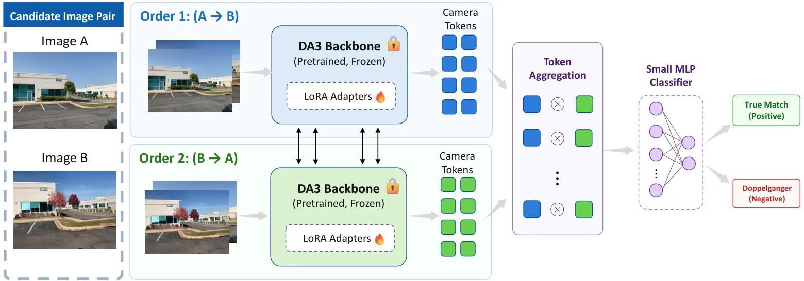
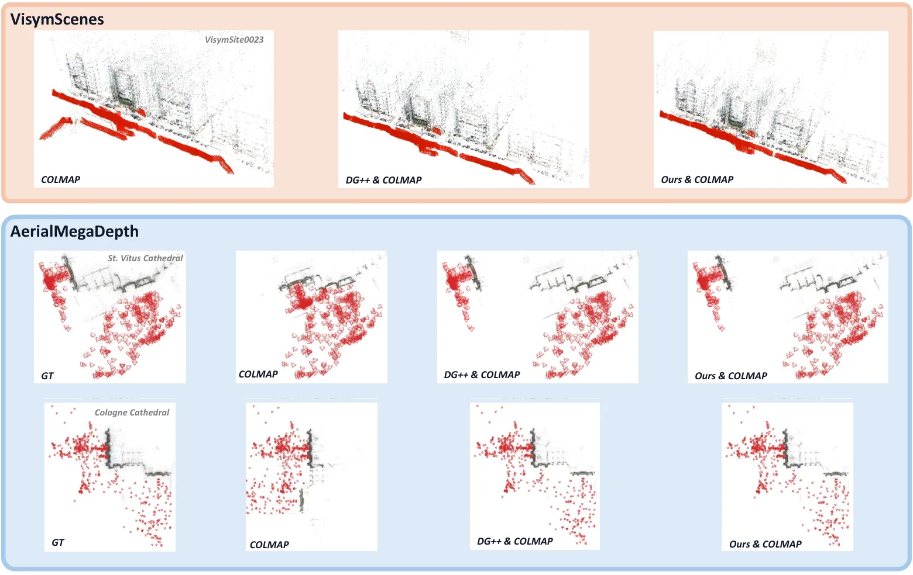
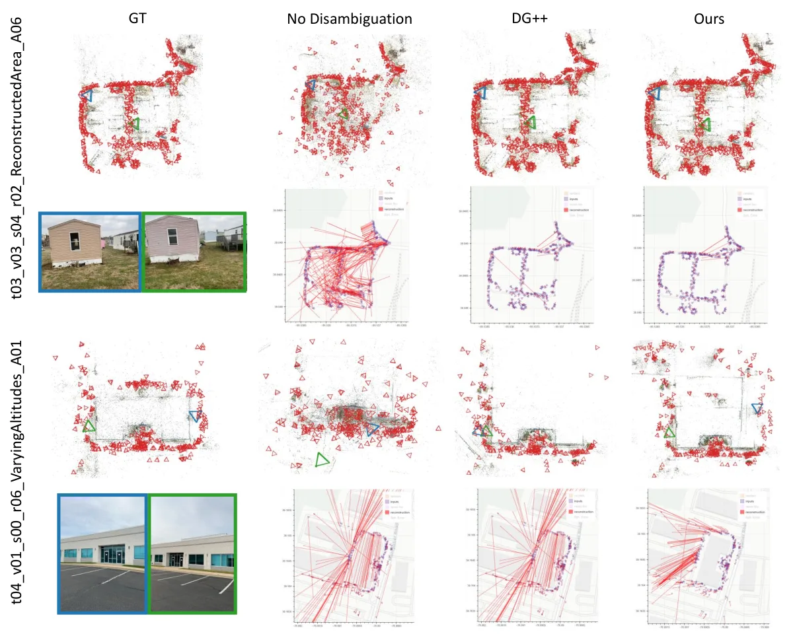
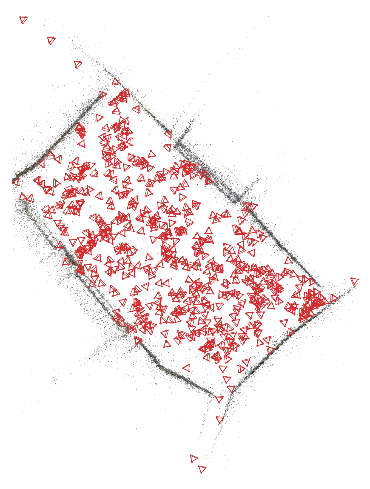
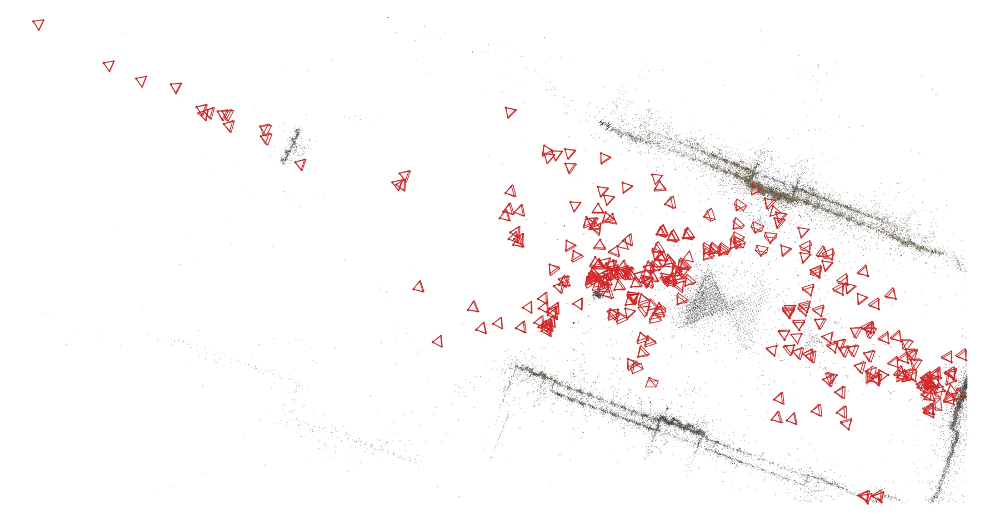
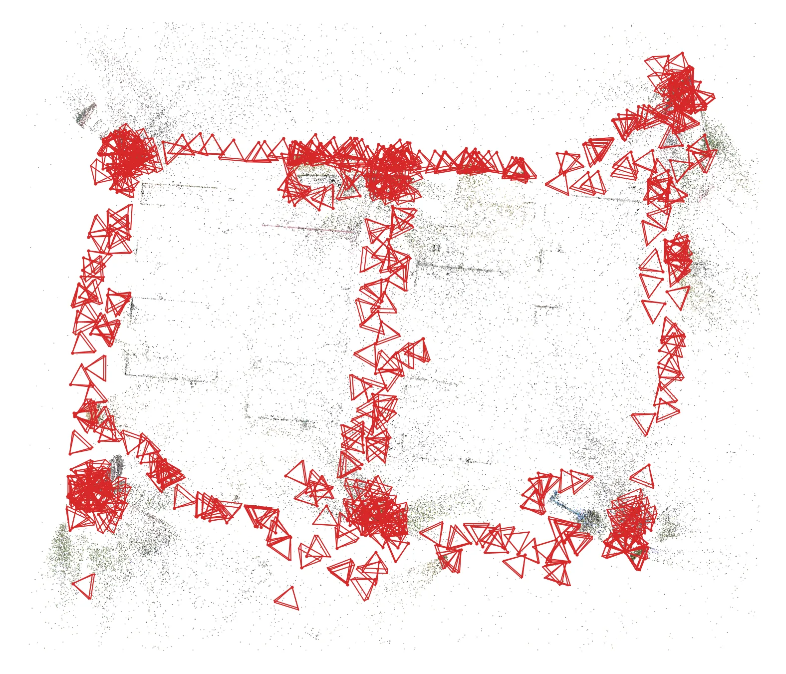

XDG：加速视觉消歧XDG: Accelerated Visual Disambiguation
直接命中 Geometry Foundation Models，并落到 SfM 匹配图、几何误匹配和大规模效率；官方 HTML 提供 DG/VisymScenes、WRIVA、LaMAR、消融和每对图像时延。
一句话工作总结
把几何基础模型原生 camera token 变成可扩展的匹配图边筛选器，降低视觉相似但空间不同表面造成的重建污染。
完整单篇海报（待补全）
当前记录尚未达到完整海报质量门槛，暂不把摘要或评分理由冒充方法/实验结论。
待补字段：方法本质拆解.constraints、方法本质拆解.note、evidence_sources、研究上下文.authors、研究上下文.lineage、研究上下文.network。下一次任务需从论文全文或官方 HTML 提取证据后再发布。
摘要
XDG 将 Depth Anything 3 的 camera tokens 直接用于 SfM 中的 doppelganger 二分类，并用 LoRA 适配基础模型、轻量 MLP 完成判别。它在保持与 DG++ 接近的消歧和重建质量的同时，将大规模图像对处理成本降低三倍以上。
Visual aliasing, also known as the doppelganger problem, remains a key challenge for structure-from-motion (SfM): visually similar but physically distinct surfaces can produce incorrect image matches and degrade reconstruction quality. Previous work mitigates this issue with geometry-aware foundation-model features, but places a heavy transformer classifier on top of the backbone, making large-scale disambiguation expensive. We introduce XDG, an efficient visual disambiguation model designed for scalable SfM. Our key observation is that a 3D foundation model already performs the cross-view geometric reasoning necessary for visual disambiguation, so doppelganger classification should adapt the backbone representation directly rather than relearn pair reasoning in a separate heavy decoder. XDG fine-tunes Depth Anything 3 with lightweight LoRA adapters and repurposes its camera tokens as compact pair-level classification tokens. A compact MLP head predicts whether a candidate image pair observes the same 3D surface. Extensive experiments show that XDG provides a favorable accuracy-efficiency tradeoff: it remains competitive with the state-of-the-art disambiguation method across pairwise and reconstruction benchmarks and delivers more than a 3x inference speedup. On individual LaMAR scenes containing thousands of images, XDG saves more than 10 hours of visual disambiguation processing. Code is available at https://github.com/xtcpete/xdg.
中文解读摘录
- 领域：Geometry Foundation Models / 3D Foundation Models；RPC 相机、绝对高程、gauge 与不确定性融合。
- 要点：沿原生 RPC 高度射线适配冻结 VGGT，把 ray-field observability、height–datum gauge 和多源 relief fusion 分开处理。26 个 US3D tiles 上 absolute MAE 为 2.99 m、coverage 为 91.9%、PAGc@2.5 m 为 72.6%，并支持 0/1/10 个控制高度。
- 判断：最贴近可靠状态估计底座的一篇：把传感器模型的不可观测低阶自由度显式化，再用控制和校准不确定性处理可辨识范围。
图表/页面预览
{kind=link}

{kind=link}

{kind=link}

{kind=link}

{kind=link}

{kind=link}
